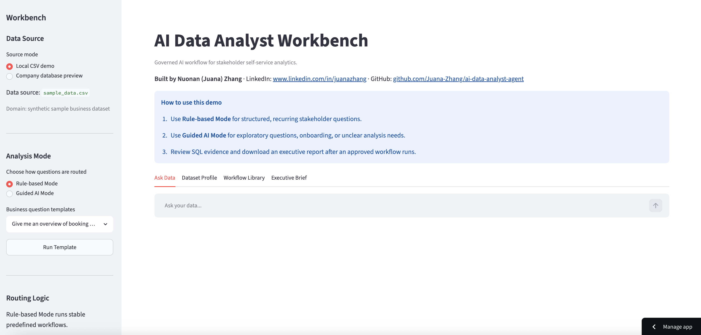

Chicago EAC
Feb 2026 - PresentData Scientist, AI Analytics
- Built an LLM-powered analytics assistant that translates ambiguous stakeholder questions into governed SQL workflows.
- Designed reusable analysis scenarios with transparent metric definitions, routing logic, and data-lineage context.
- Shaped stakeholder-ready outputs that summarize evidence, caveats, and recommended next steps for non-technical users.
Python
Streamlit
DuckDB
Gemini API
Governed AI analytics workbench with rule-based and guided AI modes, SQL evidence, and executive reporting.

Product walkthrough explaining the workflow, routing logic, and stakeholder-ready analytics outputs.
